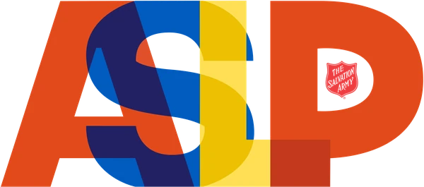

Share
Menu
Menu
Home
About
About ASLP
What the programme is, what it aims for and how it works
History of ASLP
The journey from 2016 to today
ASLP Activities
ASLP Groups
ASLP Updates
Newsletter
Every issue of the ASLP newsletter
CWG Updates
Activities and news from each CWG
Programmatic Updates
News from the ASC and the APSG
CD Strategies
Calendar
Light
Auto
Dark
Light
Auto
Dark
Sign in
Share the ASLP website
×
Anyone with the link can open the site.
Copy link
Link to the page you're on now:
Copy link
Share via
WhatsApp
Email
Teams
More…
Listen.
Learn.
Lead.
Loading the ASLP site…